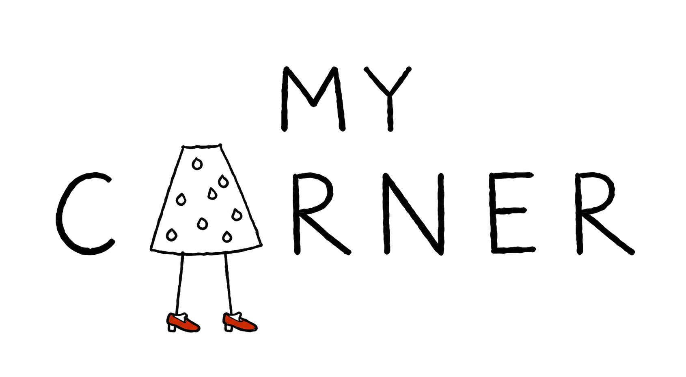
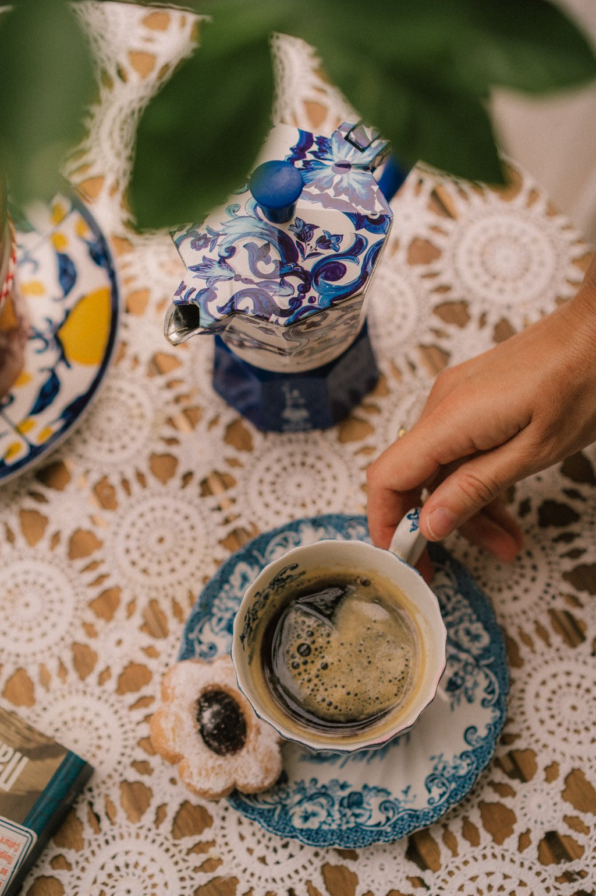

by Dasha ZhukovaМарафон по блогингу · Старт 23 ноября
Делай
Блог
И всё, и начинаем!
Прямо сейчас.
Лёгкий и доступный формат для тех, кто хочет начать сразу.
Хочу на марафон ↗Твой блог начинается с тебя.
Делай Блог
Даём себе свободу
сделать первый шаг
И начинаем прямо сейчас.
Программа марафона
7 лекций — одна неделя01Мотивация и первый шаг
Лекция первая, мотивационная. У меня ничего не получается!! Резвенчиваем стереотипы, даем себе свободу и прекращаем быть хорошими девочками. Про что надо забыть, чтобы все получилось. На что надо плюнуть, чтобы получилось. Чем придется пожертвовать, чтобы получилось (спойлер: вам это понравится!) и к чему надо себя приучить, чтобы получилось. С чего начать?! И всё, и начинаем! Прямо сейчас.
02Контент и тренды блогинга
Контент, который люди хотят сегодня. И контент, который люди не хотят сегодня. Что изменилось в мире большого блогинга с 2015, 2022 и даже с прошлого года и что нам с этим делать. Тренды глобальные и нишевые.
03Концепция блога и аудитория
Ойойой, мне совершенно не о чем вести блог. Это никому не интересно! Кто будет это смотреть? Я не эксперт! Какая от меня польза? Про концепцию блога и его аудиторию.
04Какой я персонаж?
Я такая разная! Я люблю то и это, и еще танцы. Как это всё увязать? Про смыслы, ценности, эстетику и то, что их объединяет. Находим свою уникальность, усиливаем ее х4 и создаем персонажа, за которым интересно наблюдать подписчикам и в который влюбляются рекламщики и бренды.
05Продвижение и набор подписчиков
Как это всё продвигать, не работая 24/7, не выгорая, не сливаясь и не впадая в отчаяние? Алгоритмы, стратегии, набор подписчиков, коммуникация.
06Монетизация и работа с брендами
Как это всё продавать, не работая 24/7, не выгорая, не сливаясь и не впадая в отчаяние? Работа с брендами и другие приятные способы монетизировать блог, о чем бы он ни был.
07Российский и Европейский рынки
Окно в Европу: чем отличается Российский рынок от Европейского, какие нюансы есть у того и другого, что стоит знать, учитывать и форсить, если ты выбираешь регион или переходишь из одного в другой.

Старт 23 ноября · Telegram
Делай Блог
С чего начать?!
И всё, и начинаем! Прямо сейчас.
5 500 ₽
7 лекций · 7 дней · записи навсегда